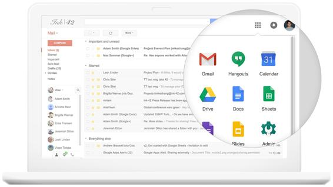

G Suite
Google has been offering online collaboration and productivity applications for independent users for quite some time. However, to make its mark in the enterprise space, Google launched G Suite (https://gsuite.google.com/) under its cloud business and since then has acquired multiple marquee customers:

Broadly speaking, G Suite offers services in primarily four different categories, as follows:
- Connect: These are the set of services like Gmail, calendaring, Google+, and Hangouts, which enable better connections across the organization
- Create: In order to enable better collaboration, Google offers services like Docs, Sheets, Forms, Slides, Sites, and Jamboard, that can be used to create and share content between users
- Access: Lots of times, users want to back up and share files, videos, and other media using secure cloud storage, so for the same, Google Drive and Cloud Search come in handy
- Control: A final set of services are in the administration space so that enterprise controls like user management, security policies, backup and retention, and mobile devices management can be handled from a central place
G Suite has an official blog to keep its users up to date on announcements and new features: https://gsuiteupdates.googleblog.com/.